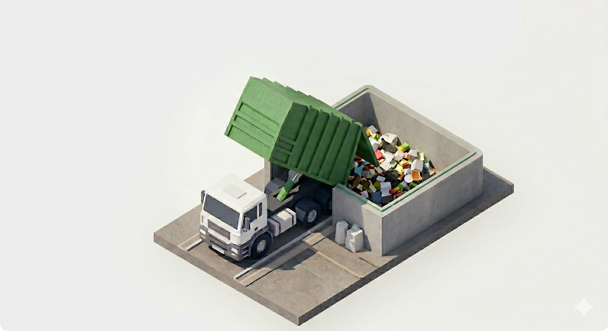
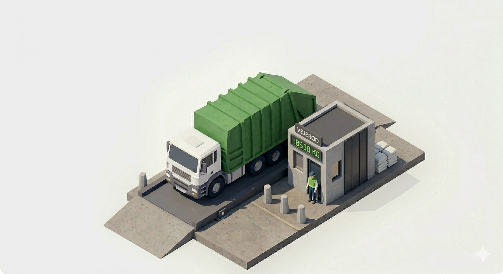

Available now
Available now
01
Sorting Guide
Show an item to the camera and get the correct local waste fraction in seconds—on a phone or at a dedicated guide station.
Use for free →Free Sorting Guide
Take a photo and get the correct fraction for your Danish recycling center. Free for anyone to use.
Tap to use your camera
Only the photo you analyze is sent. Privacy
Developed and tested with teams in the Danish waste sector


Easysort products
The free guide is one part of a larger system for understanding waste, reuse, and facility operations.
Available now
01
Show an item to the camera and get the correct local waste fraction in seconds—on a phone or at a dedicated guide station.
Use for free →
02
Understand visits, movement, and what finds a second life in direct-reuse areas.
View product →
03
Review incoming loads and document sorting issues with clear visual evidence.
View product →
04
Bring cameras and operational signals together for a better view of flow across the facility.
View product →Start a conversation
Show us the operation, the difficult decision, or the blind spot. We will tell you honestly where computer vision can help.